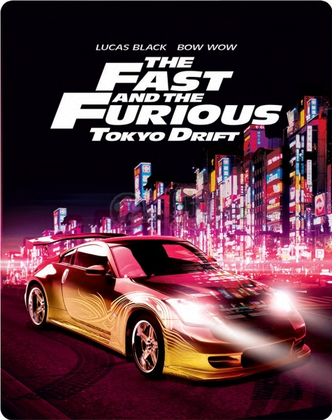

The Fast and the Furious: Tokyo Drift is a
2006 action film directed by Justin Lin and
written by Chris Morgan. It is the standalone
sequel to 2 Fast 2 Furious (2003) and is the
third installment in the Fast & Furious franchise.
The film stars Lucas Black and Bow Wow and follows
high school car enthusiast Sean Boswell (Black) who
is sent to live in Tokyo with his estranged father
and finds solace exploring the city's drifting community.

Troubled Oro Valley high school student Sean Boswell and athlete Clay race their cars,
a 1971 Chevrolet Monte Carlo, and a 2003 Dodge Viper, to win the affections of Clay's girlfriend Cindy.
When Sean cuts through a structure and catches up to Clay, Clay, desperate to win,
hits Sean's car repeatedly until they reach a high-speed turn, which causes both cars to crash;
Clay's Viper hits a cement pipe, and Sean's Monte Carlo rolls. Clay and Cindy's wealthy families help them escape punishment,
but because Sean is a recidivist, he is sent to live in Japan with his father, a U.S. Navy officer stationed in Tokyo,
in order to avoid juvenile detention or jail.
| 2006 Mitsubishi Lancer Evolution IX | 1967 Ford Mustang | 1971 Chevrolet Monte Carlo |
| 2000 Nissan Silvia S15 | 2006 Mazda RX-8 | 2006 Nissan 350Z |
https://www.google.com/search?q=fast+and+furious+tokyo+drift+cars+list&sxsrf=APq-WBuP_AgJ7wYjunl0fEHDEFUbHckc0A%3A1649230378925&ei=KkJNYrn7N8LTkwWHqr-oAQ&oq=fast+and+furious+tokyo+drift+cars+&gs_lcp=Cgdnd3Mtd2l6EAEYADIFCAAQywEyBQgAEMsBMgUIABDLATIFCAAQywEyCAgAEMkDEMsBMgUIABDLATIFCAAQywEyBggAEBYQHjIGCAAQFhAeMgYIABAWEB46BAgAEEdKBAhBGABKBAhGGABQIVghYM4FaABwAngAgAGWAYgBlgGSAQMwLjGYAQCgAQHIAQjAAQE&sclient=gws-wiz
https://en.wikipedia.org/wiki/The_Fast_and_the_Furious:_Tokyo_Drift
https://www.google.com/search?q=fast+and+furious+tokyo+drift+cars&sxsrf=APq-WBsh4lZLFoUO1u8YN9gfE25K_ysz3g:1649231697670&source=lnms&tbm=isch&sa=X&ved=2ahUKEwjfgvfr-v72AhVrh_0HHYtAA5oQ_AUoAXoECAEQAw&biw=1920&bih=969&dpr=1